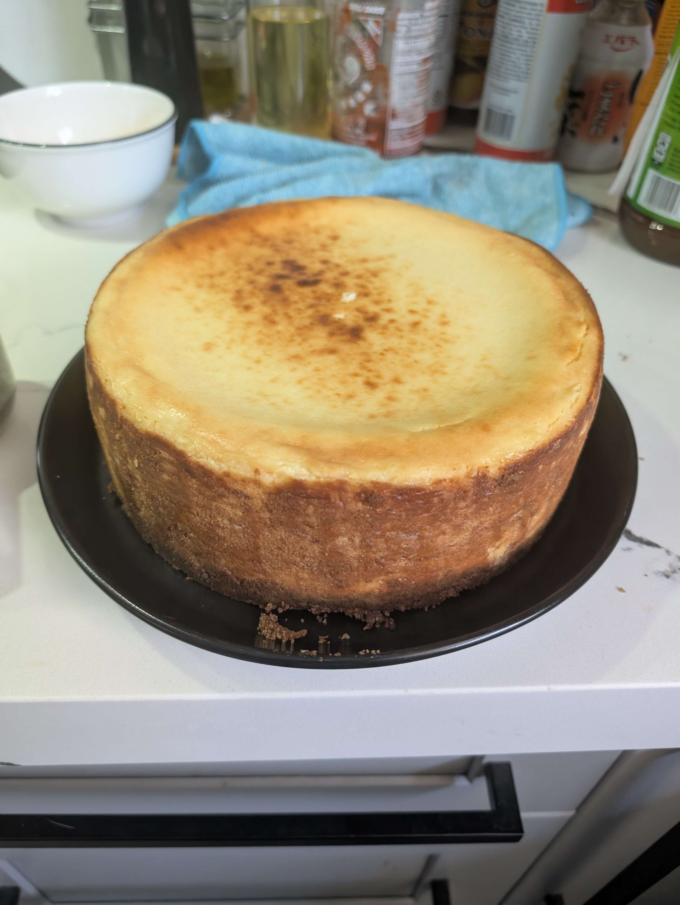

Home
New York Cheesecake

Description
This cheesecake recipe can be found at Serious Eats, written by Stella Parks, alongside more detailed instructions and ingredients. It uses a special pan, is surprisingly easy, and tastes amazing!
Ingredients
For the Graham Cracker crust:
- 7 ounces graham crackers
- 1 ounces unsalted butter
- Pinch of salt
For the Cheesecake:
- 32 ounces cream cheese
- 8 ounces fresh goat cheese
- 1/2 ounce lemon juice
- 1/2 ounce vanilla extract
- 1/4 teaspoon kosher salt
- 1/4 teaspoon orange flower water
- 14 ounces plain suger
- 6 eggs
- 6 ounces heavy cream
Steps
- Line cheesecake pan with tinfoil.
- Add graham cracker ingredients to pan and stir. Flatten.
- Preheat oven to 450F. Combine cream cheese, goat cheese, lemon juice, vanilla extract, salt, and orange flower water. Mix on low until roughly combined, increasing to medium until there are no lumps.
- Reduce speed and add all sugar at once, mixing till well combined.
- Whisk egg in through sieve.
- Bring heavy cream to a boil and add to the batter, while mixing.
- Move batter to cheesecake pan and put in oven for 25 minutes. (My times are different due to oven temperature)
- Turn off oven and keep door open for 10 minutes. Set oven back to 250F and cook for 50 minutes till thermometer reads 145.
- Let cheesecake fully cool on rack and then refrigerate after 2-3 hours.
- Serve